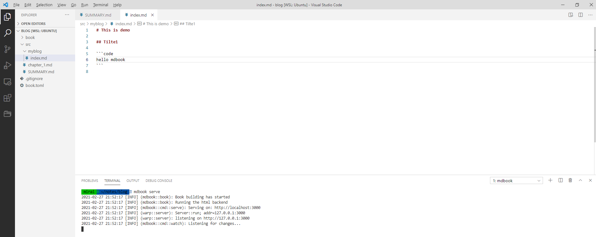
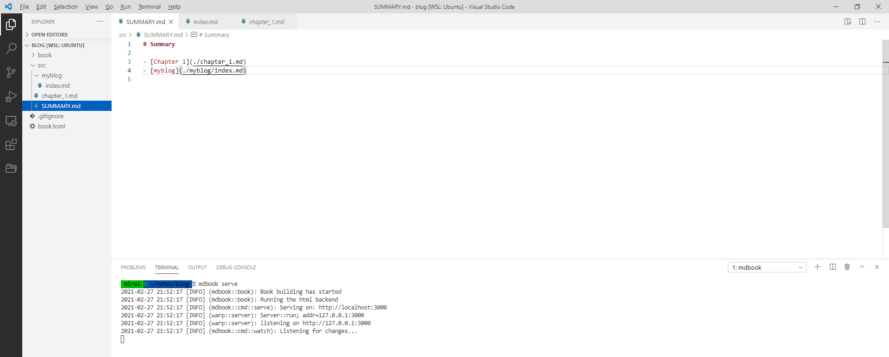
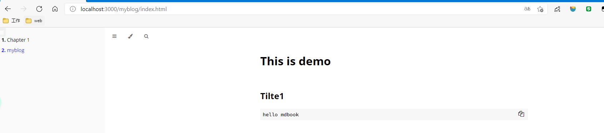

使用mdBook编写博客
阅读须知
阅读本文，你可以知道：
- 一些mdBook 的安装搭建
- 发布博客到
GitHub Pages
但是，本文不涉及：
安装 mdbook
cargo install mdbook
创建和初始blog
# 1.创建目录&&进入目录
mirai ~/notes mkdir blog && cd "$_"
# 2.初始化项目
mirai ~/notes/blog mdbook init
# 3.是否创建 .gitignore 忽略文件
Do you want a .gitignore to be created? (y/n)
y
# 4.创建标题
What title would you like to give the book?
Mirai's Tech blog
2021-02-27 21:22:41 [INFO] (mdbook::book::init): Creating a new book with stub content
All done, no errors...
# 5.查看文件目录
mirai ~/notes/blog ls -al
total 24
drwxr-xr-x 4 mirai mirai 4096 Feb 27 21:22 .
drwxr-xr-x 3 mirai mirai 4096 Feb 27 21:22 ..
-rw-r--r-- 1 mirai mirai 5 Feb 27 21:22 .gitignore
drwxr-xr-x 2 mirai mirai 4096 Feb 27 21:22 book
-rw-r--r-- 1 mirai mirai 69 Feb 27 21:22 book.toml
drwxr-xr-x 2 mirai mirai 4096 Feb 27 21:22 src
mirai ~/notes/blog
启动博客
mirai ~/notes/blog mdbook serve
2021-02-27 21:34:40 [INFO] (mdbook::book): Book building has started
2021-02-27 21:34:40 [INFO] (mdbook::book): Running the html backend
2021-02-27 21:34:40 [INFO] (mdbook::cmd::serve): Serving on: http://localhost:3000
2021-02-27 21:34:40 [INFO] (warp::server): Server::run; addr=127.0.0.1:3000
2021-02-27 21:34:40 [INFO] (warp::server): listening on http://127.0.0.1:3000
2021-02-27 21:34:40 [INFO] (mdbook::cmd::watch): Listening for changes...
在浏览器输入 http://127.0.0.1:3000 便可以访问博客了
编辑博客
使用喜欢的编辑器打开 blog
-
创建文档
myblog/index.md
-
在
SUMMARY.md添加链接
-
启动博客

添加GitHub Actions
配置秘钥
-
生成 SSH 密钥对
-
配置秘钥
进入xxx.github.io项目，点击
Settings-> Secrets-> New repository secrets,NameACTIONS_DEPLOY_KEY, Value 为秘钥 -
配置公钥
进入xxx.github.io项目，点击
Settings-> Deploy keys -> add deploy key,Title 为pub_rsa, Value 为公钥。最后勾选 【Allow write access】，点击 Add key。
开启GitHub Actions
进入xxx.github.io项目,点击
Actions,选择 Rust 项目的，点击Set up this workflow
编辑.github/workflows/xxx.yml文件
deploy_key: ${{ secrets.ACTIONS_DEPLOY_KEY }}中的ACTIONS_DEPLOY_KEY就是秘钥
每次代码更新都会触发构建，最后在 <xxx.github.io> 可看到页面效果。
如何使用 Github Pages
这个就直接参考其他博客吧~~